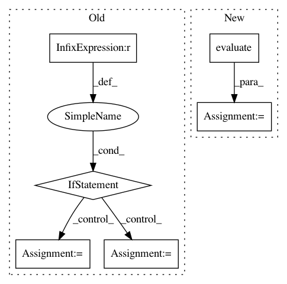

8d6f6fb8fab89d858a392ae59960f1e894bdefba,train.py,,train,#Any#Any#Any#Any#,68
Before Change
model.end_train_step()
model.save_model(trial=trial, output_log=True)
if FLAGS.evaluate_dataset == "":
mse = model.evaluate_test_batch()
model.print_status(mse)
else:
if FLAGS.evaluate_dataset == "all":
test_list = ["set5", "set14", "bsd100"]
else:
test_list = [FLAGS.evaluate_dataset]
for test_data in test_list:
test(model, test_data)
def test(model, test_data):
test_filenames = util.get_files_in_directory(FLAGS.data_dir + "/" + test_data)
total_psnr = total_mse = 0
After Change
// training epoch finished
model.epochs_completed += 1
mse, psnr = model.evaluate(test_filenames)
model.print_status(mse, log=model_updated)
model.log_to_tensorboard(test_filenames[0], psnr, save_meta_data=model_updated)
model_updated = model.update_epoch_and_lr()
In pattern: SUPERPATTERN
Frequency: 3
Non-data size: 6
Instances
Project Name: jiny2001/dcscn-super-resolution
Commit Name: 8d6f6fb8fab89d858a392ae59960f1e894bdefba
Time: 2018-04-17
Author: jin.yamanaka@gmail.com
File Name: train.py
Class Name:
Method Name: train
Project Name: cornellius-gp/gpytorch
Commit Name: 38a40828ec688be626e51ebcb1a60a54479fd997
Time: 2017-08-29
Author: ruihan.wu14@gmail.com
File Name: gpytorch/lazy/toeplitz_lazy_variable.py
Class Name: ToeplitzLazyVariable
Method Name: diag
Project Name: mathics/Mathics
Commit Name: eb9ddab4ba9d032588fc40e6c4616338d7eb672b
Time: 2016-08-24
Author: Bernhard.Liebl@gmx.org
File Name: test/test_color.py
Class Name: ColorTest
Method Name: testInverseConversions